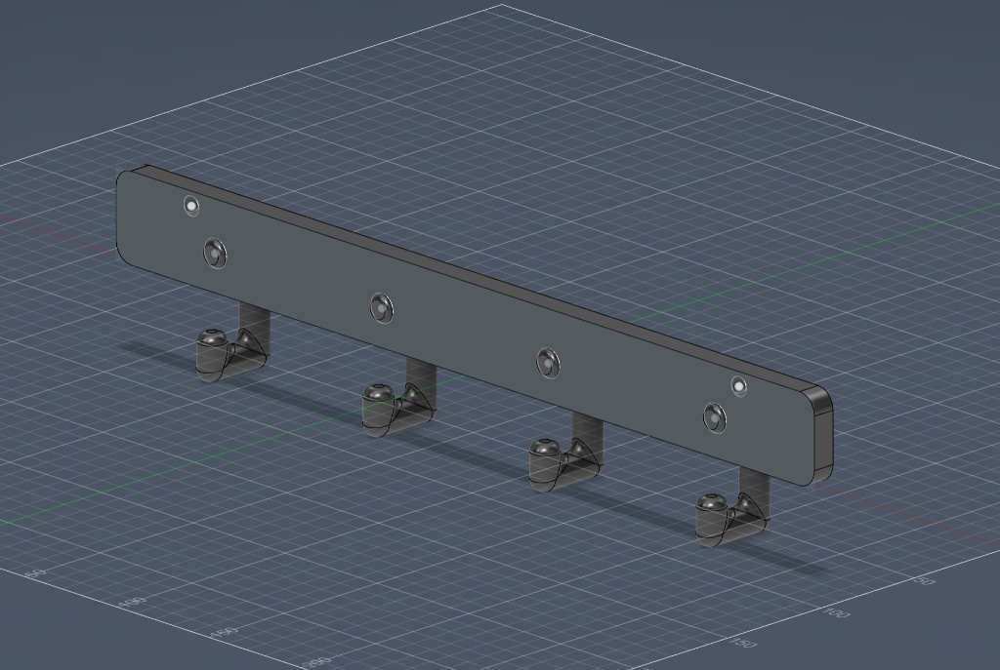
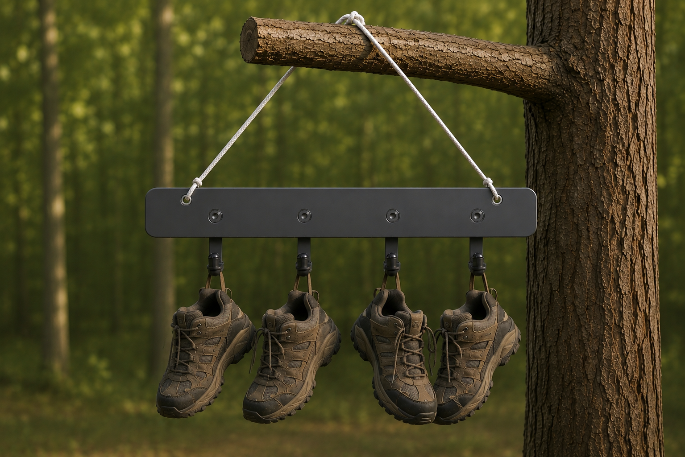

Ongoing concepts and ideas developed in Fusion 360
A collection of engineering concepts, outdoor gadgets, and CAD designs focused on hiking, camping, and environmental utility.


**Disclaimer: Image above is my original prototype design with the added AI-generated branch and shoes for visualization purposes.**
After a long day of hiking or backpacking, your shoes are most likely damp and smelly. This shoe hanger design allows you to easily hang your shoes with a paracord loop onto a tree branch. The added height should help air circulation and drying.
Of course, this is not the most functional idea, but for someone who doesn't like smelly shoes next to or in the tent, this is a simple, lightweight, and relatively compact solution.